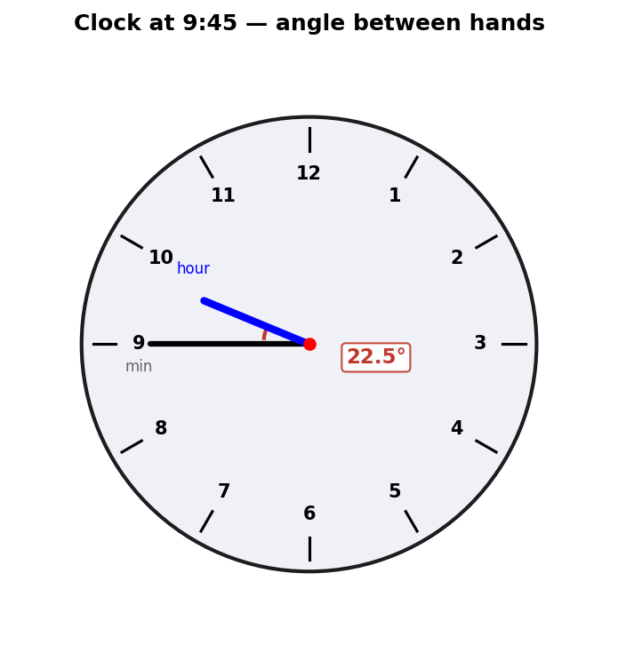

If you look at a clock and the time is 9:45, what is the angle between the hour and the minute hands?

[3 marks] · Options: A) 0° B) 7.5° C) 15° D) 22.5° E) 30°
Strategy. The minute hand at 45 minutes points to the 9-position. Calculate its angle from 12.
Minute hand
$$\text{Minute angle} = \frac{45}{60} \times 360° = 270° \text{ from 12}$$The minute hand is at the 9 o'clock position.
Strategy. KEY INSIGHT: the hour hand does NOT sit at 9 — it moves continuously. At 9:45 it is $\frac{3}{4}$ of the way from 9 to 10.
Hour hand
$$\text{Hour angle} = 9 \times 30° + \frac{45}{60} \times 30° = 270° + 22.5° = 292.5°$$Strategy. Subtract the two positions. Always take the minimum (smaller) angle.
Angle between hands
$$\text{Angle} = 292.5° - 270° = 22.5°$$Formula shortcut: $|30H - 5.5M| = |30(9) - 5.5(45)| = |270 - 247.5| = 22.5°$. If the result exceeds 180°, subtract from 360°.